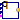
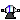
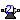
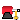
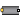
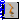

This library contains the different components of the r3 robot. Usually, there is no need to use this library directly.
Extends from Modelica.Icons.Package (Icon for standard packages).| Name | Description |
|---|---|
| AxisControlBus | Data bus for one robot axis |
| Data bus for all axes of robot | |
| PathPlanning1 | Generate reference angles for fastest kinematic movement |
| PathPlanning6 | Generate reference angles for fastest kinematic movement |
|  PathToAxisControlBus | Map path planning to one axis control bus |
|  GearType1 | Motor inertia and gearbox model for r3 joints 1,2,3 |
|  GearType2 | Motor inertia and gearbox model for r3 joints 4,5,6 |
|  Motor | Motor model including current controller of r3 motors |
| Controller | P-PI cascade controller for one axis |
|  AxisType1 | Axis model of the r3 joints 1,2,3 |
| AxisType2 | Axis model of the r3 joints 4,5,6 |
|  MechanicalStructure | Model of the mechanical part of the r3 robot (without animation) |
 Modelica.Mechanics.MultiBody.Examples.Systems.RobotR3.Components.AxisControlBus
Modelica.Mechanics.MultiBody.Examples.Systems.RobotR3.Components.AxisControlBusSignal bus that is used to communicate all signals for one axis. This is an expandable connector which has a "default" set of signals. Note, the input/output causalities of the signals are determined from the connections to this bus.
Extends from Modelica.Icons.SignalSubBus (Icon for signal sub-bus).
| Name | Description |
|---|---|
| motion_ref | = true, if reference motion is not in rest |
| angle_ref | Reference angle of axis flange [rad] |
| angle | Angle of axis flange [rad] |
| speed_ref | Reference speed of axis flange [rad/s] |
| speed | Speed of axis flange [rad/s] |
| acceleration_ref | Reference acceleration of axis flange [rad/s2] |
| acceleration | Acceleration of axis flange [rad/s2] |
| current_ref | Reference current of motor [A] |
| current | Current of motor [A] |
| motorAngle | Angle of motor flange [rad] |
| motorSpeed | Speed of motor flange [rad/s] |
Signal bus that is used to communicate all signals of the robot. This is an expandable connector which has a "default" set of signals. Note, the input/output causalities of the signals are determined from the connections to this bus.
Extends from Modelica.Icons.SignalBus (Icon for signal bus).
| Name | Description |
|---|---|
| axisControlBus1 | Bus of axis 1 |
| axisControlBus2 | Bus of axis 2 |
| axisControlBus3 | Bus of axis 3 |
| axisControlBus4 | Bus of axis 4 |
| axisControlBus5 | Bus of axis 5 |
| axisControlBus6 | Bus of axis 6 |
Given
this component computes the fastest movement under the given constraints. This means, that:
The acceleration, constant velocity and deceleration phase are determined in such a way that the movement starts form the start angles and ends at the end angles. The output of this block are the computed angles, angular velocities and angular acceleration and this information is stored as reference motion on the controlBus of the r3 robot.
| Name | Description |
|---|---|
| angleBegDeg | Start angle [deg] |
| angleEndDeg | End angle [deg] |
| speedMax | Maximum axis speed [rad/s] |
| accMax | Maximum axis acceleration [rad/s2] |
| startTime | Start time of movement [s] |
| swingTime | Additional time after reference motion is in rest before simulation is stopped [s] |
| Name | Description |
|---|---|
| controlBus |
Given
this component computes the fastest movement under the given constraints. This means, that:
The acceleration, constant velocity and deceleration phase are determined in such a way that the movement starts form the start angles and ends at the end angles. The output of this block are the computed angles, angular velocities and angular acceleration and this information is stored as reference motion on the controlBus of the r3 robot.
| Name | Description |
|---|---|
| naxis | number of driven axis |
| angleBegDeg[naxis] | Start angles [deg] |
| angleEndDeg[naxis] | End angles [deg] |
| speedMax[naxis] | Maximum axis speed [rad/s] |
| accMax[naxis] | Maximum axis acceleration [rad/s2] |
| startTime | Start time of movement [s] |
| swingTime | Additional time after reference motion is in rest before simulation is stopped [s] |
| Name | Description |
|---|---|
| controlBus |
| Name | Description |
|---|---|
| nAxis | Number of driven axis |
| axisUsed | Map path planning of axisUsed to axisControlBus |
| Name | Description |
|---|---|
| q[nAxis] | |
| qd[nAxis] | |
| qdd[nAxis] | |
| axisControlBus | |
| moving[nAxis] |
Models the gearbox used in the first three joints with all its effects, like elasticity and friction. Coulomb friction is approximated by a friction element acting at the "motor"-side. In reality, bearing friction should be also incorporated at the driven side of the gearbox. However, this would require considerable more effort for the measurement of the friction parameters. Default values for all parameters are given for joint 1. Model relativeStates is used to define the relative angle and relative angular velocity across the spring (=gear elasticity) as state variables. The reason is, that a default initial value of zero of these states makes always sense. If the absolute angle and the absolute angular velocity of model Jmotor would be used as states, and the load angle (= joint angle of robot) is NOT zero, one has always to ensure that the initial values of the motor angle and of the joint angle are modified correspondingly. Otherwise, the spring has an unrealistic deflection at initial time. Since relative quantities are used as state variables, this simplifies the definition of initial values considerably.
Extends from Modelica.Mechanics.Rotational.Interfaces.PartialTwoFlanges (Partial model for a component with two rotational 1-dim. shaft flanges).
| Name | Description |
|---|---|
| i | gear ratio |
| c | Spring constant [N.m/rad] |
| d | Damper constant [N.m.s/rad] |
| Rv0 | Viscous friction torque at zero velocity [N.m] |
| Rv1 | Viscous friction coefficient (R=Rv0+Rv1*abs(qd)) [N.m.s/rad] |
| peak | Maximum static friction torque is peak*Rv0 (peak >= 1) |
| Name | Description |
|---|---|
| flange_a | Flange of left shaft |
| flange_b | Flange of right shaft |
The elasticity and damping in the gearboxes of the outermost three joints of the robot is neglected. Default values for all parameters are given for joint 4.
Extends from Modelica.Mechanics.Rotational.Interfaces.PartialTwoFlanges (Partial model for a component with two rotational 1-dim. shaft flanges).
| Name | Description |
|---|---|
| i | Gear ratio |
| Rv0 | Viscous friction torque at zero velocity [N.m] |
| Rv1 | Viscous friction coefficient in [Nms/rad] (R=Rv0+Rv1*abs(qd)) |
| peak | Maximum static friction torque is peak*Rv0 (peak >= 1) |
| Name | Description |
|---|---|
| flange_a | Flange of left shaft |
| flange_b | Flange of right shaft |
Default values are given for the motor of joint 1. The input of the motor is the desired current (the actual current is proportional to the torque produced by the motor).
Extends from Modelica.Mechanics.MultiBody.Icons.MotorIcon (Icon of an electrical motor.).
| Name | Description |
|---|---|
| J | Moment of inertia of motor [kg.m2] |
| k | Gain of motor |
| w | Time constant of motor |
| D | Damping constant of motor |
| w_max | Maximum speed of motor [rad/s] |
| i_max | Maximum current of motor [A] |
| Name | Description |
|---|---|
| flange_motor | |
| axisControlBus |
This controller has an inner PI-controller to control the motor speed, and an outer P-controller to control the motor position of one axis. The reference signals are with respect to the gear-output, and the gear ratio is used in the controller to determine the motor reference signals. All signals are communicated via the "axisControlBus".
| Name | Description |
|---|---|
| kp | Gain of position controller |
| ks | Gain of speed controller |
| Ts | Time constant of integrator of speed controller [s] |
| ratio | Gear ratio of gearbox |
| Name | Description |
|---|---|
| axisControlBus |
| Name | Description |
|---|---|
| Controller | |
| kp | Gain of position controller |
| ks | Gain of speed controller |
| Ts | Time constant of integrator of speed controller [s] |
| Motor | |
| k | Gain of motor |
| w | Time constant of motor |
| D | Damping constant of motor |
| J | Moment of inertia of motor [kg.m2] |
| Gear | |
| ratio | Gear ratio |
| Rv0 | Viscous friction torque at zero velocity in [Nm] [N.m] |
| Rv1 | Viscous friction coefficient in [Nms/rad] [N.m.s/rad] |
| peak | Maximum static friction torque is peak*Rv0 (peak >= 1) |
| c | Spring constant [N.m/rad] |
| cd | Damper constant [N.m.s/rad] |
| Name | Description |
|---|---|
| flange | |
| axisControlBus |
The axis model consists of the controller, the motor including current controller and the gearbox including gear elasticity and bearing friction. The only difference to the axis model of joints 4,5,6 (= model axisType2) is that elasticity and damping in the gear boxes are not neglected.
The input signals of this component are the desired angle and desired angular velocity of the joint. The reference signals have to be "smooth" (position has to be differentiable at least 2 times). Otherwise, the gear elasticity leads to significant oscillations.
Default values of the parameters are given for the axis of joint 1.
| Name | Description |
|---|---|
| gear | |
| Controller | |
| kp | Gain of position controller |
| ks | Gain of speed controller |
| Ts | Time constant of integrator of speed controller [s] |
| Motor | |
| k | Gain of motor |
| w | Time constant of motor |
| D | Damping constant of motor |
| J | Moment of inertia of motor [kg.m2] |
| Gear | |
| ratio | Gear ratio |
| Rv0 | Viscous friction torque at zero velocity in [Nm] [N.m] |
| Rv1 | Viscous friction coefficient in [Nms/rad] [N.m.s/rad] |
| peak | Maximum static friction torque is peak*Rv0 (peak >= 1) |
| Name | Description |
|---|---|
| flange | |
| axisControlBus |
This model contains the mechanical components of the r3 robot (multibody system).
| Name | Description |
|---|---|
| animation | = true, if animation shall be enabled |
| mLoad | Mass of load [kg] |
| rLoad[3] | Distance from last flange to load mass> [m] |
| g | Gravity acceleration [m/s2] |
| Name | Description |
|---|---|
| axis1 | |
| axis2 | |
| axis3 | |
| axis4 | |
| axis5 | |
| axis6 |